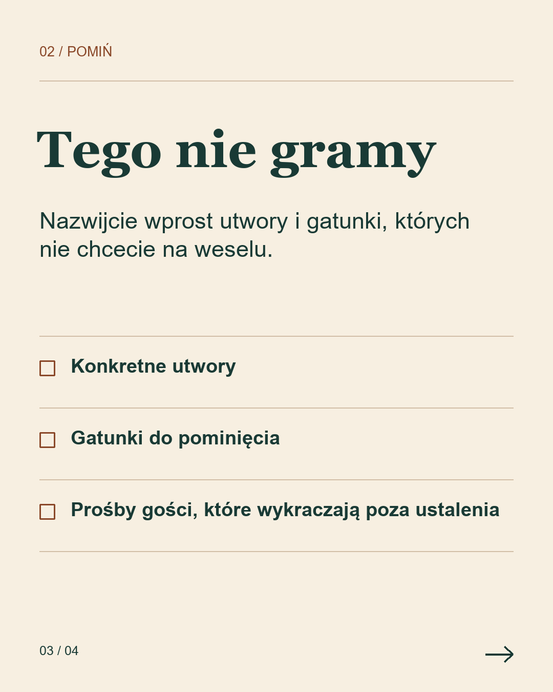
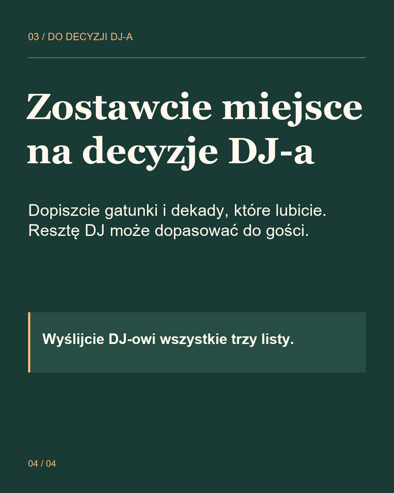

Podgląd karuzeli






Teksty slajdów i opisy alternatywne
# Playlista weselna bez zgadywania ## Slajd 1 Playlista weselna bez zgadywania Podzielcie utwory na trzy listy i wyślijcie je DJ-owi. Tekst alternatywny: Okładka checklisty. Tytuł Playlista weselna bez zgadywania i kadr konsoli DJ-a. ## Slajd 2 To ma wybrzmieć Wypiszcie ulubione utwory. Przy ważnych momentach dopiszcie wersję i fragment. Tekst alternatywny: Lista rzeczy do przekazania DJ-owi przy ważnych utworach: tytuł, wykonawca, wersja, moment i fragment. ## Slajd 3 Tego nie gramy Nazwijcie wprost utwory i gatunki, których nie chcecie na weselu. Tekst alternatywny: Lista muzyki do pominięcia: konkretne utwory i gatunki. Można też ustalić, jak odpowiadać na prośby gości. ## Slajd 4 Zostawcie miejsce na decyzje DJ-a Dopiszcie gatunki i dekady, które lubicie. Resztę DJ może dopasować do gości. Wyślijcie DJ-owi wszystkie trzy listy. Tekst alternatywny: Ostatni slajd podpowiada, co zostawić decyzji DJ-a, i zachęca do wysłania mu wszystkich trzech list. ## Pola checklisty Zagraj: - Tytuł i wykonawca - Wersja utworu - Moment i fragment Pomiń: - Konkretne utwory - Gatunki do pominięcia - Prośby gości, które wykraczają poza ustalenia ## Zdjęcia - Chinarianphotographer · Pexels #5789237 · https://images.pexels.com/photos/5789237/pexels-photo-5789237.jpeg Licencja Pexels: https://www.pexels.com/license/